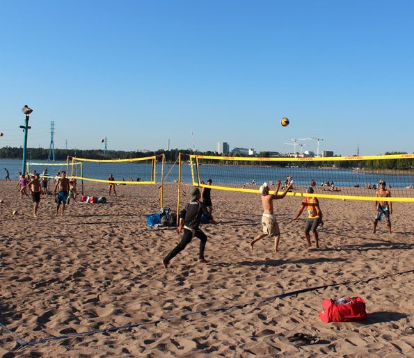

Aktiviteetit

Jos etsit kaupunkilomaltasi kahviloiden ja ravintoloiden lisäksi uusia kokemuksia, Helsinki on juuri oikea paikka sinulle.
Kaupunkia pääset kesäaikaan kiertelemään helposti vuokrattavilla kaupunkipyörillä tai sähköpotkulaudoilla edullisesti.
Pääset myös helposti vesille ihailemaan Helsingin edustan saaristoa ja esimerkiksi tutkimaan historiallista Suomenlinnaa.
Allas Sea Pool

Yrjönkadun uimahalli

Löyly

Hernesaarenranta

Hietaniemen uimaranta
Saaristoristeily

Suomenlinna

Korkeasaari

Linnanmäki